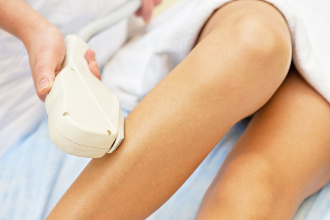
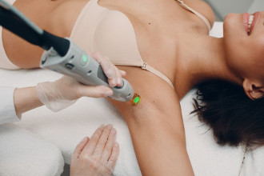
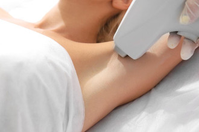
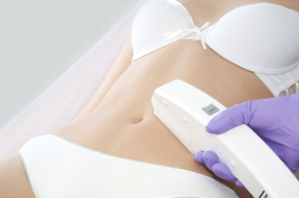
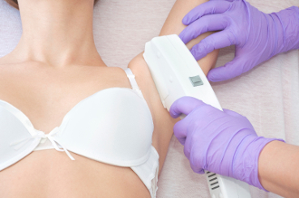
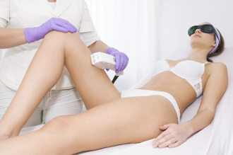

Depilacja laserowa
1. Co to jest?
Depilacja laserowa – epilacja niepożądanego owłosienia za pomocą wiązki lasera, która wnika głęboko w skórę, niszcząc cebulkę włosa wraz z jej korzeniami. Depilacja laserowa uważana jest za bezpieczną i bezinwazyjną. Energia, która jest wytwarzana przez laser, pochłaniana jest przez barwnik włosa (melaninę), która następnie zmienia się w energię termiczną i niszczy nieodwracalnie cebulkę włosa. Warunkiem uzyskania zadowalających efektów jest dobór odpowiedniej mocy i czasu trwania impulsu, które są zależne od rodzaju skóry i włosów.
2. Krótka historia odkrycia.
Pierwsze próby usuwania owłosienia metodą laserową podjęto już w latach 60-tch XX wieku jednakże konstruowane urządzenia były niedokładne, duże i na tyle nieporęczne, że nie znajdowały zastosowania w kosmetyce. Dopiero w roku 1983 Oshiro i Maruyama skonstruowali laser o odpowiedniej długości fali i odpowiednim czasie trwania impulsu, dzięki czemu pozbywano się włosów, zachowując nienaruszoną skórę. Od tej pory trwa nieustanny proces doskonalenia maszyn aby efekty depilacji były najskuteczniejsze i najtrwalsze.

3. Przygotowanie do zabiegu.
Przygotowując się do zabiegu należy zapoznać się wszelkimi przeciwskazaniami, a w razie wątpliwości prosimy o kontakt z personelem gabinetów, który chętnie odpowie na wszystkie Państwa pytania. Prawidłowo przygotowane miejsce do depilacji powinno być ogolone maszynką co najmniej 1 dzień przed zabiegiem. Jeżeli wcześniej była stosowana depilacja mechaniczna (depilatorem, bądź woskiem) zaleca się zaprzestać jej stosowania na 4 tygodnie przed planowanym zabiegiem depilacji laserowej. Bezpośrednio przed zabiegiem nie należy również opalać miejsc przeznaczonych do depilacji na około 7÷10 dni przed zabiegiem depilacji oraz zaprzestać z korzystania z preparatów lub innych środków światłouczulających lub zawierających Retinol na 4 tyg. przed zabiegiem.

4. Przebieg zabiegu.
Zabieg jest wykonywany urządzeniem MediLine ICE-SHR, przy użyciu najnowszej zdobyczy techniki jaką jest głowica ICE-SHR. Szeroka filtracja 755-815 nm daje możliwość depilacji każdego rodzaju włosa przy zachowaniu wysokiej skuteczności. Zastosowane lampy w głowicy o zdwojonej mocy w stosunku do standardowych SHR-ów, pracują z częstotliwością do 10Hz (10 impulsów na 1 sekundę). Powoduje to możliwość ciągłego ruchu głowicy, co znacząco skraca czas zabiegu, jednocześnie nie powodując omijania żadnego z miejsc. Po nałożeniu żelu (stosowanego przy zabiegach USG) na depilowaną partię ciała, głowica jest płynnie przesuwana. Tips mrożący zamontowany w głowicy jest ciągle chłodzony do temp. -2 °C wywołując efekt „gęsiej skórki”. Ma to szczególne znaczenie zwłaszcza w trudno dostępnych miejscach jak np. bikini, znacząco poprawiając zarówno komfort dla klientów jak i skuteczność zabiegu.

5. Czy zabieg jest bolesny?
Zabieg jest całkowicie bezbolesny i nieinwazyjny, chociaż można poczuć zimno (głównie od nakładanego żelu). W przypadku MediLine ICE-SHR nie ma potrzeby stosowania żadnych środków znieczulających. Bardzo duże znaczenie dla bezbolesności ma wydajne chłodzenie głowicy oraz tips mrożący. Zazwyczaj nie występują żadne podrażnienia skóry ani inne niepożądane efekty.
6. Cykl wzrostu włosa.
Ze względu na budowę i funkcję włosów rozróżniamy trzy ich rodzaje: a) włosy mieszkowe delikatne owłosienie płodów i noworodków; b) drobne owłosienie ciała, które po osiągnięciu pełnej dojrzałości płciowej w różnych częściach ciała zastępowane jest wtórnym owłosieniem typu męskiego lub żeńskiego; c) owłosienie główne, do którego zaliczamy włosy głowy, łonowe, rzęsy i brwi. Rozwój włosa, obejmujący określone stadia, nazywamy cyklem włosowym. W każdym stadium włos ma charakterystyczną strukturę. Cykl włosowy trwa od 2 do 6 lat. W stadium wzrostu znajduje się stale ok. 85÷90% wszystkich włosów i okres ten to anagen. Melanocyty, komórki barwnikowe zawierające barwnik skóry i włosów – melaninę zaczynają jej produkcję. Włos zaczyna rosnąć wychodząc ponad powierzchnię skóry. Najdłużej bo 2÷6 lat anagen trwa na skórze głowy, w pozostałych miejscach czas trwania anagenu to 4÷8 tyg. W fazie przejściowej, zwanej katagenem, znajduje się 1% włosów i trwa ona około 2 tygodnie. W początkowym okresie katagenu czynność komórek macierzy włosa ustaje i ulegają one zwyrodnieniu oraz zanikowi. Zatrzymana zostaje produkcja melaniny przez melanocyty w mieszku włosowym. Wyróżniamy jeszcze telogen, okres spoczynku, trwający od 2 do 4 miesięcy. Włos telogenowy, jako twór całkowicie zrogowaciały, nie zawiera barwnika. W okresie spoczynkowym włos najpierw obluzowuje się w mieszku włosowym, a pod koniec fazy wypada. Prawidłowo dziennie tracimy od 40÷100 włosów. Nowy włos wyrasta z tego samego mieszka dopiero po 1,5 do 3 miesięcy, przy czym przyrasta około 1 cm miesięcznie. Włosy odradzają się stale i odbywa się to niepostrzeżenie. Prawidłowe wypadanie i wzrost nowych włosów jest zrównoważone i uwarunkowane tym, że włosy znajdują się w różnych stadiach wzrostu, to znaczy, że cykl włosowy przebiega asynchronicznie. W ciągu życia człowieka każdy z nas przechodzi około 20÷30 razy cykl włosowy.

7. Jak często należy powtarzać zabieg depilacji i ile razy trzeba powtórzyć zabieg?
Depilację laserową wykonujemy w odstępach 4÷8 tygodni. Przy pierwszych wizytach należy powtarzać wizyty co 4 tygodnie, później jeżeli zaobserwujemy spowolnienie wzrostu włosa, można wydłużyć częstotliwość spotkań w uzgodnieniu z naszymi specjalistami. Skuteczna depilacja jest możliwa tylko w stosunku do włosów znajdujących się w fazie anagen. W fazie katagen i telogen nie da się usunąć włosa. Nasz organizm to żywa tkanka, której reakcji nie możemy przewidzieć, jak również nie da się zbadać w jakiej aktualnie fazie znajdują się włosy na naszym ciele. Jeśli podczas pierwszych sesji jakieś włoski nie zareagowały na zabieg, powtarzamy zabiegi wysyłając im kolejne dawki impulsów świetlnych. Niestety nie da się określić dokładnej liczby potrzebnych zabiegów do całkowitego usunięcia włosów. Jest ona uzależniona od miejsca depilacji, gospodarki hormonalnej, fazy wzrostu, koloru włosa i skóry (im ciemniejszy włos na jasnej karnacji tym łatwiej poddaje się depilacji). Usuwanie włosów przy użyciu metody ICE-SHR wymaga średnio 6÷8 wizyt. Bardzo ważne jest regularne powtarzanie zabiegów w celu osiągnięcia maksymalnej skuteczności w jak najkrótszym czasie. Jeżeli, ze względu na brak czasu przedłużymy planowaną przerwę między zabiegami, możemy znacznie opóźnić ostateczny efekt trwałej redukcji owłosienia.

8. Kiedy pierwsze rezultaty?
Rezultaty nie są widoczne od razu. Trzeba odczekać około dwóch tygodni, aby organizm pozbył się pierwszych, uszkodzonych podczas zabiegu włosów. Każdorazowo można średnio spodziewać się wypadnięcia około 20% włosów z miejsca poddawanego depilacji, choć efekty są indywidualne - obserwuje się wypadanie u niektórych klientów nawet do 70% owłosienia.
9. Wskazania po zabiegu.
Bezpośrednio po zabiegu nie można korzystać z intensywnych kąpieli słonecznych ani z wizyt w solarium przez okres 7 do 10 dni. Zaleca się również nie korzystać z innych specjalistycznych zabiegów kosmetycznych, w miejscach depilowanych, które mogą mieć wpływ na dodatkowe podrażnienia skóry przez okres jak powyżej.

10. Przeciwskazania do zabiegu.
Przeciwwskazania do zabiegu: - ciąża i karmienie piersią; - świeża opalenizna, krótsza niż 10 dni (słoneczna i solarium); - stosowanie samoopalacza w terminie krótszym niż 3 tygodnie przed zabiegiem w miejscach poddawanych depilacji; - rozrusznik serca, pompa insulinowa lub implanty; - cukrzyca; - stosowanie chemioterapii lub radioterapii; - padaczka; - pokrzywka świetlna; - toczeń; - łuszczyca; - nadciśnienie (nie wyregulowane lekami); - bielactwo (chyba, że lekarz stwierdzi inaczej); - tatuaż lub makijaż permanentny w miejscu wykonywania depilacji; - stosowanie ziół: dziurawca i nagietka w okresie krótszym niż 2 tygodnie przed zabiegiem; - stosowanie Retinolu lub innych preparatów lub leków światło uczulających w okresie krótszym niż 4 tygodnie przed zabiegiem; - wykonywanie innych specjalistycznych zabiegów kosmetycznych w miejscach depilowanych mających wpływ na podrażnienie skóry w okresie krótszym niż 2 tygonie